Un canal de YouTube sin cara, sin cámara,
sin editor.
Cómo una persona — o un negocio — arranca un canal faceless desde cero: entra una idea, sale un video listo para subir. Narración, ilustraciones fijas en un solo estilo bloqueado, texto en pantalla, música, miniaturas, descripción. Ocho estaciones, tres decisiones, un chat. Esta página es el mapa, la demo y el paso a paso.
Dieciocho segundos. Cero manos humanas entre la idea y el archivo.
Un guion de prueba de tres frases, dicho por una voz clonada, cortado en cuatro planos en sus propios límites de frase, cuatro ilustraciones generadas en un estilo desde una sola imagen de referencia, ensambladas y renderizadas con las palabras en pantalla como tipografía real. Es una prueba de humo, no un video viral — y es exactamente la línea por la que pasa un video de diez minutos, con 150 imágenes en vez de cuatro.
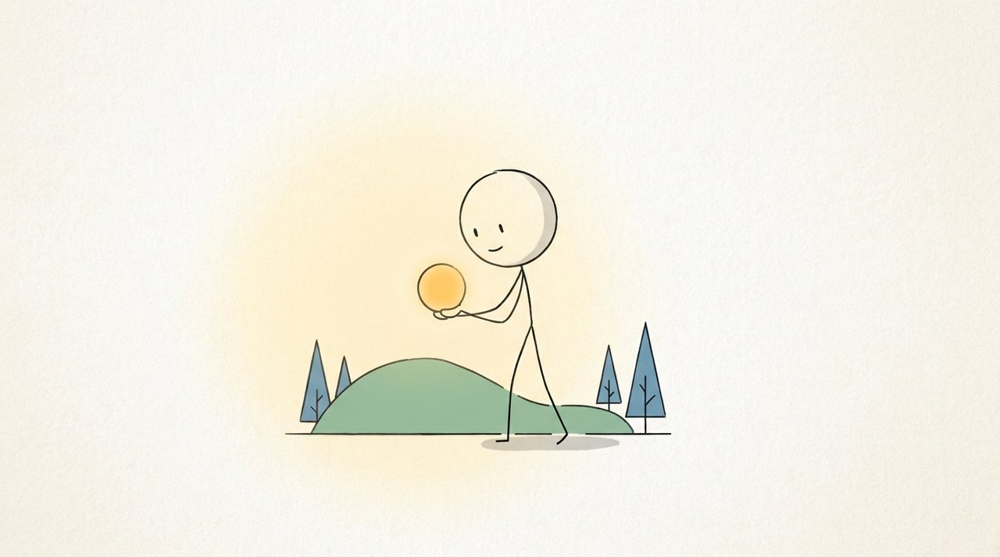
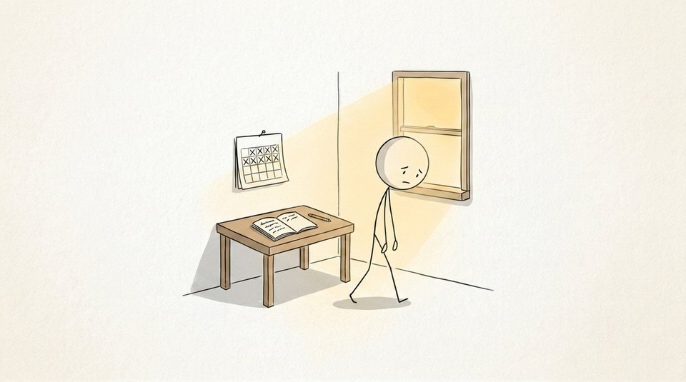
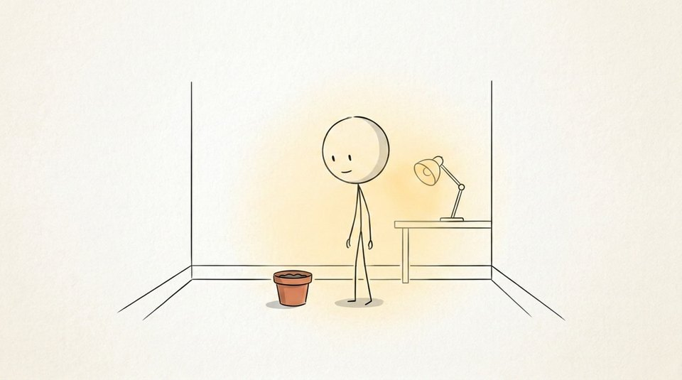
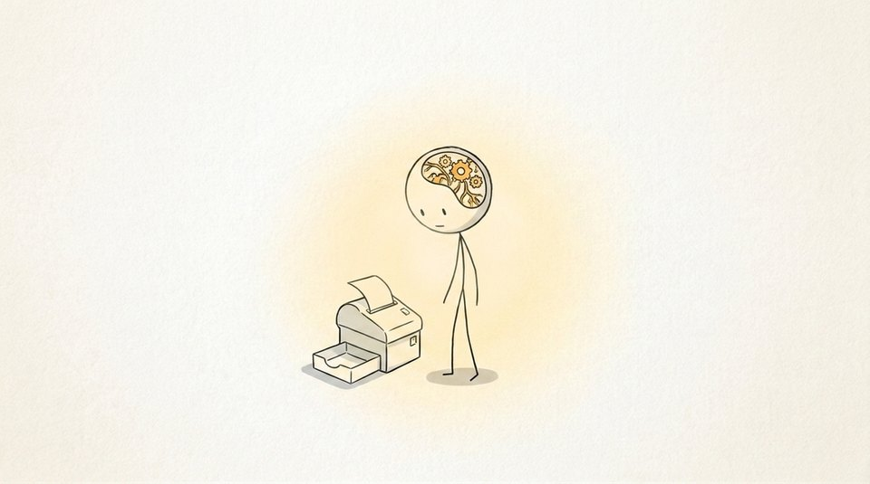
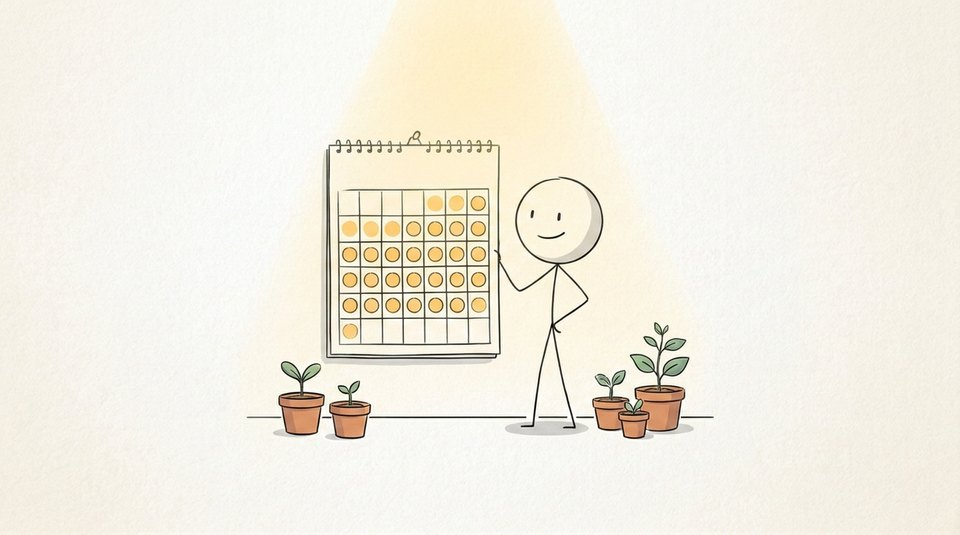
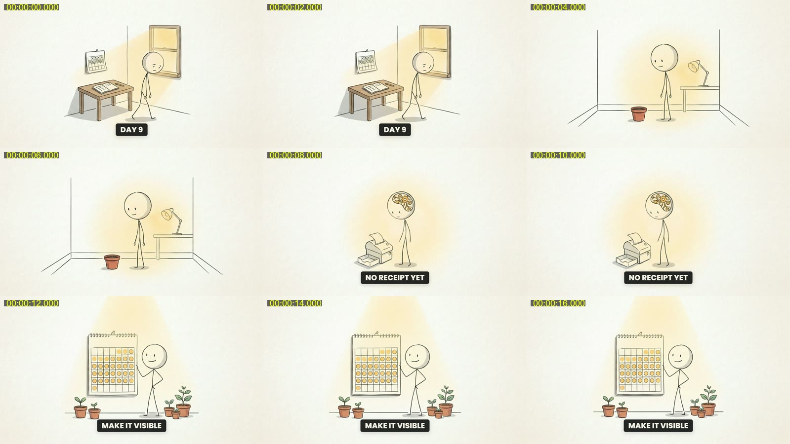
Una persona. O un negocio. Desde cero.
El proceso de referencia que esta máquina reproduce es público: un creador llevó un canal recién creado a los requisitos de monetización de YouTube en nueve días con voz IA, imágenes fijas y un guion que retiene. Sus ocho pasos manuales — prompts en Abacus, transcriptores, CapCut a mano — son estas ocho estaciones, corridas desde archivos.
Tienes un tema que sabes explicar y cero ganas de grabarte. Traes un nicho y una voz — clonada, o la gratuita local — y la máquina escribe, ilustra, ensambla y empaqueta.
- un nicho del que puedas hablar 50 videos
- una voz (la tuya clonada, o una gratuita)
- Claude Code + el Content OS
Explicativos sobre tu mundo — las preguntas que el cliente hace antes de comprar — publicados cada semana bajo tu marca, sin día de estudio. La misma máquina, tu paleta, tu style key.
- una capa de marca (colores, voz, audiencia)
- 3–6 canales competidores para modelar
- las llaves: voz, imágenes, transcripción
Estimado, a precios publicados. Le pagas a cada proveedor directo; el OS orquesta y no agrega nada.
- voz ≈ 10k caracteres (ElevenLabs) o gratis (Kokoro)
- ≈150 imágenes a 1K ≈ $6 (KIE) o ≈150 créditos Higgsfield
- 3 miniaturas a 2K · render local, gratis, ~20 min
Claude produce de inicio a fin. Estas son sus manos.


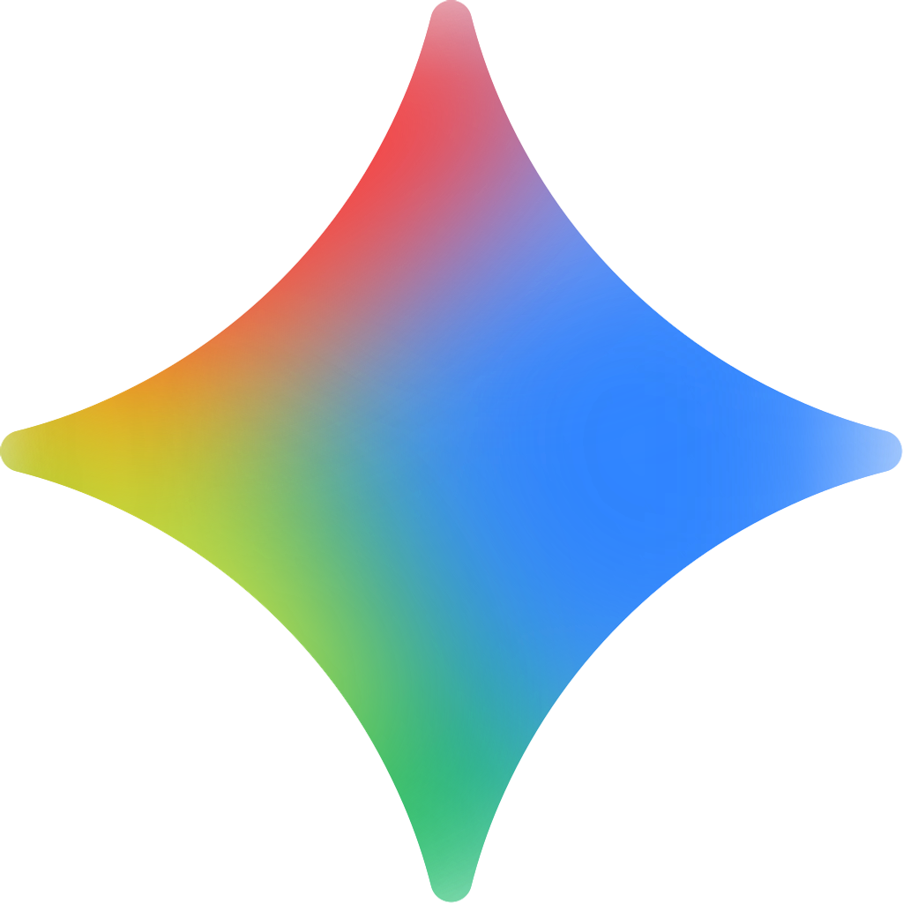


¿Cómo una idea se convierte en un video subido?
Ocho estaciones. Tres son compuertas — ahí decides tú; el sistema corre el resto. Cada estación lee y escribe archivos en una sola carpeta, así que la línea se reanuda donde se quedó, y un miembro que ya tiene guion o voz entra a media línea.
¿Qué hace una productora… cuando no hay productora?
Los mismos trabajos que harían una mesa de investigación, un guionista, un narrador, un director de arte, un ilustrador, un editor y un publicador. Cada uno es una skill; cada skill escribe archivos que la siguiente lee.
MESA DE INVESTIGACIÓN → ideas
No adivina: las vistas reales, la edad y los títulos de los competidores, sacados video por video. Una idea es buena cuando la propia audiencia de un canal reaccionó de más — eso es un número.
EDITOR EN JEFE → la elección
Eliges la idea y la dirección del paquete del top 10. Todo lo que sigue cuesta dinero; este es el lugar más barato para equivocarse.
GUIONISTA → la narración
El formato sale de los beat maps de los donantes; los hechos de investigación con enlaces; las palabras se escriben para decirse. Notas en pantalla y fuentes nunca entran al texto de la voz.
DIRECTOR → el guion
Lo lees. La voz y 150 imágenes siguen a estas palabras, así que nada después de esta compuerta las cambia. Las correcciones son por segmento — baratas.
NARRADOR + DIRECTOR DE ARTE → voz y estilo
Un WAV con tiempos por palabra; un descriptor de estilo y una imagen style key. La consistencia es una imagen de referencia, no un párrafo de adjetivos.
ILUSTRADOR + EDITOR + PUBLICADOR → el archivo
Planos en frases, imágenes en un solo look, tipografía en vez de texto pintado, música bajo la voz, render verificado, títulos en los moldes que ya funcionan en el nicho.
Un sistema. Idea adentro, video afuera.
Esto es el Content OS: cada estación es una skill, las skills se encadenan, y la línea entera corre en un solo chat hasta que el máster y su paquete están en disco. Cambia el estilo, la voz o el proveedor de imágenes y nada más se mueve.
faceless-channel-setup
- nombre + handle que se leen como el nicho
- logo + banner en el style key, sin texto pintado
- descripción con keywords de demanda real
- checklist de Studio: país, keywords, marca de agua, auto-dub
faceless-niche-intel
- competidores escaneados video por video
- score de outlier = vistas ÷ mediana del canal
- moldes de título del corpus real
- 50 ideas con score → top 10 → tú eliges
faceless-script
- beat maps de donantes: estructura, nunca líneas
- investigación verdad-primero, dos fuentes por número
- narración por segmentos + en pantalla + claims
- 5 hooks alternos → tú apruebas
faceless-voiceover
- voz clonada, o Kokoro local gratis
- UN wav unido como PCM (sin deriva)
- transcript palabra por palabra = el reloj
- ¿traes tu propia voz? entras aquí
faceless-storyboard
- preset de estilo o estilo leído de referencias
- planos cortados al final de frase con los tiempos reales
- un prompt de escena por plano; el texto como campo
- el validador rechaza texto-en-imagen → prueba de 10
faceless-visuals
- Nano Banana Pro vía Higgsfield o KIE
- style key adjunto a cada generación
- archivos nombrados por índice + segundo
- hojas de contacto, reanudar, regenerar rechazos
faceless-assemble
- chunks HyperFrames ≤ 20 s en inicios de plano
- movimiento drift / push, tipografía en pantalla
- voz −14 LUFS, música por debajo
- render en serie, verificado por frames, hoja de QA
faceless-package
- 5 títulos dentro de los moldes del nicho
- 3 miniaturas en el style key, texto exacto
- descripción con capítulos de tiempos reales
- checklist de subida → publicar
LISTO PARA SUBIR. SIGUIENTE IDEA.
- una carpeta, todos los archivos, reanudable
- la misma línea para el video dos
- costos dichos antes de gastar
La corrida, tal como fue.
Cada número de abajo sale de los archivos en disco, no de un plan.
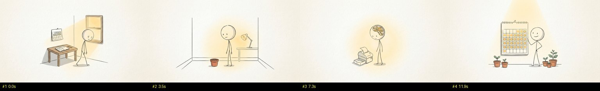
Una imagen de referencia es todo el estilo.
Un estilo son tres textos y una imagen: un descriptor (medio, paleta, línea, protagonista, fondo, composición), un negativo y una imagen key generada una vez a partir de ellos. Cambia el archivo y la misma máquina hace otro canal. Vienen seis presets; un estilo propio se lee de los frames que te gustan.
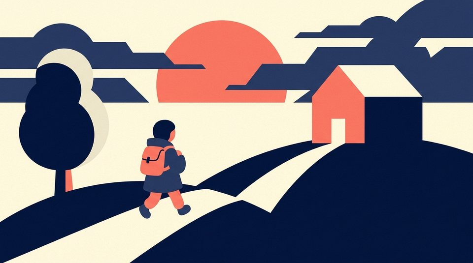
flat-vector-editorialfinanzas / negocios / tech — navy, crema, coral, sin contornos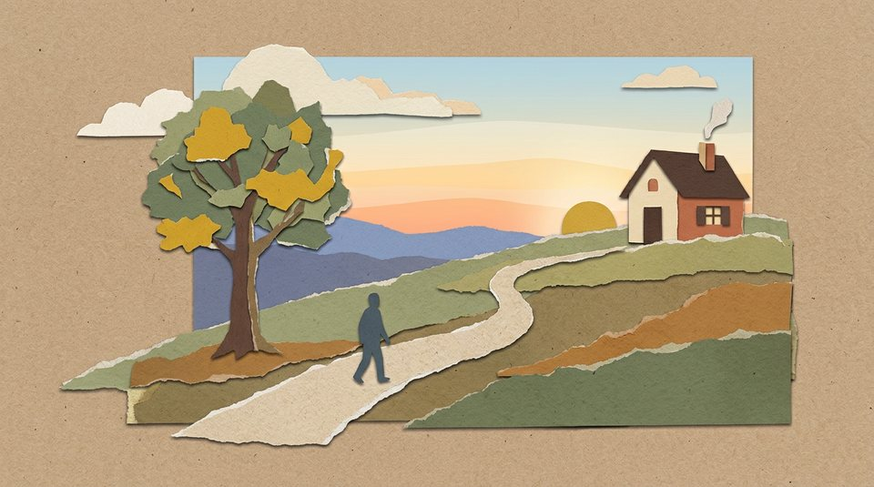
paper-cutout-collagehistoria / narrativa — bordes de cartulina, kraft, un acento mostaza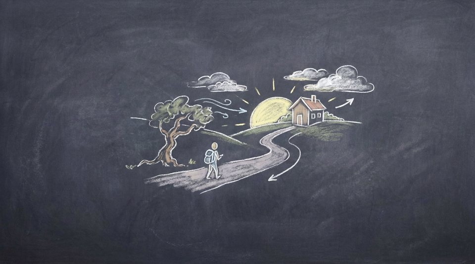
chalkboard-lectureciencia / cómo funcionan las cosas — gis sobre pizarra, un amarillo pálido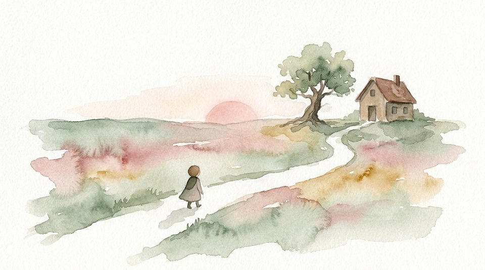
soft-watercolor-storybienestar / reflexivo — aguadas, salvia, rosa, ocre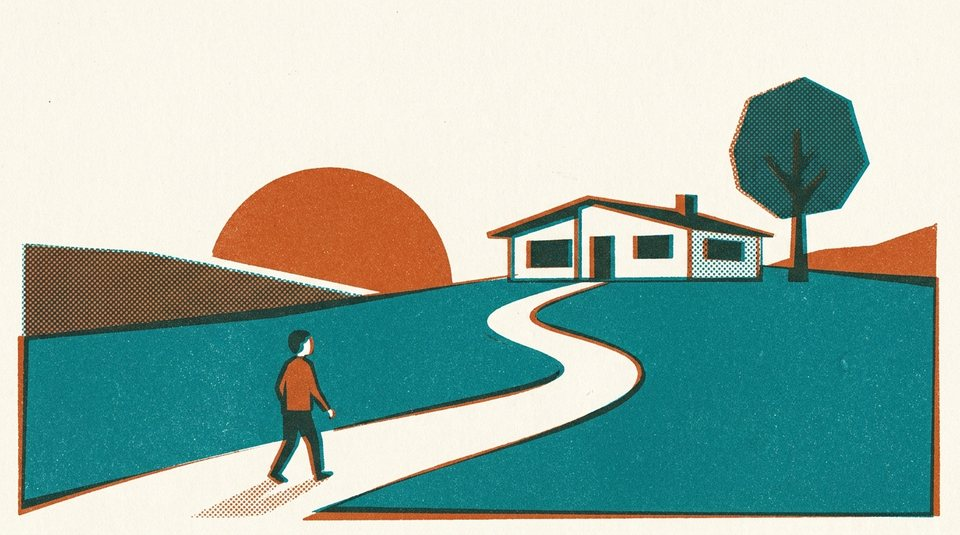
retro-print-halftonecultura / economía — risografía de dos tintas, semitonoPor qué la máquina tiene esta forma.
De cero al primer video. En orden.
Necesitas el Content OS, que vive dentro de la comunidad Agentic AI Content, y tres llaves. Después es un chat con tres decisiones.
La comunidad (Skool). Ahí está el classroom: Start Here → Foundations → Install the Content OS → el pipeline estación por estación.
skool.com/ai-growth-collectiveDentro de Install the Content OS está el formulario de acceso. Fork de infinitx-hq/nave, clónalo y corre el instalador: Node, Python, ffmpeg, HyperFrames y un render verificado antes de tocar nada.
.envASSEMBLYAI_API_KEY (los tiempos por palabra), ELEVENLABS_API_KEY (tu voz clonada — o sáltala y usa la voz local gratuita), KIE_API_KEY (imágenes por API) o un login de Higgsfield. Le pagas a cada proveedor directo.
Nombre, handle, logo y banner en tu style key, una descripción con keywords de demanda, los ajustes de Studio (país, keywords, marca de agua, auto-dub, teléfono verificado). El kit es un checklist que vas marcando.
"Configura el canal faceless para [nicho]."faceless.config.jsonNicho, 3–6 canales competidores, voz, preset de estilo, proveedor de imágenes, minutos objetivo. Un archivo; cada estación lo lee.
Un comando. La máquina escanea a los competidores y muestra el top 10 (eliges), escribe el guion (apruebas), genera las primeras diez imágenes como prueba (revisas el estilo), y termina: imágenes, render, paquete.
/faceless-youtube — [tu idea, o "encuéntrame la idea"]Título de los moldes, miniatura del style key, descripción con capítulos reales, tags, categoría, idioma + auto-dub, oculto → público al terminar el procesamiento. Siguiente idea, misma carpeta, misma línea.
¿Tienes algo que explicar? Tienes un canal esperando.
Una máquina, dos puertas: instálala tú dentro de la comunidad, o que Nave Partners construya y opere el canal para tu negocio.
PRODUCIDO POR ..... CLAUDE CODE (el Content OS)
VOZ ............... ELEVENLABS · KOKORO
OÍDOS ............. ASSEMBLYAI
IMÁGENES .......... NANO BANANA PRO (HIGGSFIELD · KIE.AI)
RENDER ............ HYPERFRAMES
PUBLICACIÓN ....... ZERNIO · YOUTUBE STUDIO